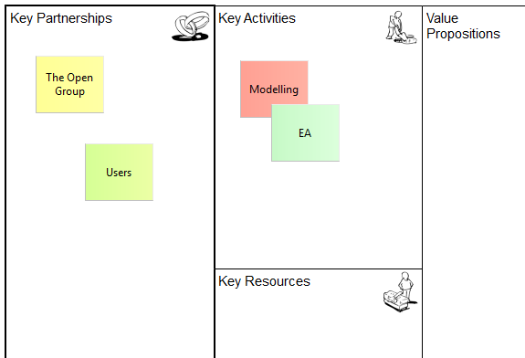

The quickest way to get started with the Canvas Modelling Toolkit is to create a new Canvas based on an existing template. We'll create a new Business Model Canvas.
The Canvas consists of 9 empty "Blocks". Each Block acts as container that can contain "Stickies" and other objects that are added from the Palette. Each Block is currently locked so that you cannot move or resize it. Effectively, the Blocks act as backdrop containers. Each Block also has a textual "hint" associated with it that show in the Hints Window.
Add "Stickies" from the Palette and edit the text in the Sticky to create your Canvas model:
Adding "Stickies" to the Canvas
The Business Model Canvas is licensed under the Creative Commons Attribution-Share Alike 3.0 Unported License